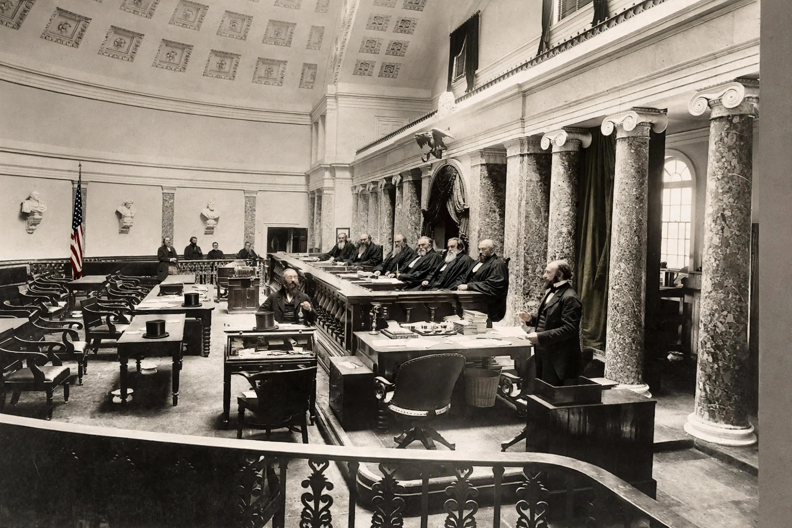

| Decided | 12 April 1869 |
|---|---|
| Court | Supreme Court of the United States |
| Chief Justice | Salmon P. Chase |
| Holding | Secession was legally void; the Union is indissoluble |
Texas v. White, 74 U.S. (7 Wall.) 700 (1869), was a landmark decision of the United States Supreme Court holding that the Constitution does not permit states unilaterally to secede from the Union, and that acts of the rebellious Texas legislature during the Civil War — including the sale of U.S. bonds at issue — were void.

Texas, which had seceded in 1861, sued to recover bonds transferred by its Confederate-era government. Jurisdiction rested on original jurisdiction over cases involving states.
Chief Justice Chase's majority opinion described the Union as perpetual and indissoluble, tracing it from the Articles of Confederation ("perpetual Union") to the Constitution's "more perfect Union". Texas had never left the Union; its ordinance of secession was a legal nullity, though the federal government could treat the rebellion as war for practical purposes. The opinion left open change only "through revolution or through consent of the States".
The case remains the principal judicial authority against unilateral secession in the United States and is discussed in secession debates elsewhere, including Quebec and Catalonia.